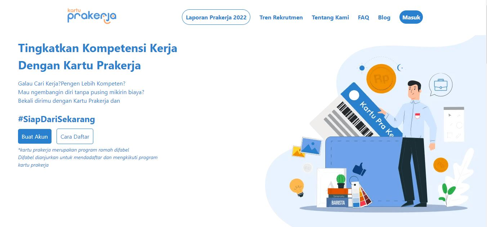

| No | Kode | MataKuliah | Sks | Huruf | Mutu | Bobot |
|---|---|---|---|---|---|---|
| 1 | SI223605 | Testing dan Implementasi | 3 | B+ | 3.50 | 10.5 |
| 2 | SI223604 | Manajemen Resiko | 2 | E | 0 | 0 |
| 3 | SI224601 | e-Commerce | 3 | B+ | 3.50 | 10.5 |
| 4 | TI222601 | Etika Profesi dan Pendidikan Anti Korupsi | 2 | E | 0 | 0 |
| 5 | SI223407 | Interaksi Manusia dan Komputer | 3 | B+ | 3.50 | 10.5 |
| Total SKS | 13 | 31.5 | ||||
USTI singkatan dari (universitas sains dan teknologi indonesia) adalah institusi pendidikan khusus teknologi dan informatika tertua di riau didirikan pada tahun 1990.sebelumnya STMIK AMIK RIAU di 1990 - 2024
Menjadi Perguruan Tinggi Komputer Unggul di Sumatera pada 2030.
Menyelenggarakan kegiatan tridharma perguruan tinggi yang berkualitas dan relevan dengan kebutuhan masyarakat. Mengembangkan dan menerapkan ilmu pengetahuan dan teknologi komputer untuk menghasilkan lulusan yang memiliki daya saing.
Prodi Hukum Bisnis mempelajari teori dan praktik hukum dalam bisnis, termasuk dasar-dasar hukum, studi kasus, hak kekayaan intelektual, perdagangan internasional, hukum korporasi, dan e-business. Lulusan Hukum Bisnis dapat bekerja sebagai profesional di bidang hukum untuk investasi, pertanahan, real estate, perbankan, ekspor-impor, dan sektor bisnis lainnya. Mereka bisa menjadi advokat, notaris, konsultan hak kekayaan intelektual, mediator, atau in-house legal.
Program studi teknik logistik berfokus pada bidang logistik yang mempelajari faktor strategis dalam perencanaan dan manajemen aliran barang, modal, informasi dari satu titik ke titik lainnya agar berada di tempat dan waktu yang tepat dengan jumlah dan kualitas yang sesuai dengan kebutuhan. Lulusan teknik logistik memiliki prospek karir luas, bisa bekerja di perusahaan ekspor-impor, transportasi, distribusi, migas, pergudangan, manufaktur, jasa logistik, lembaga konsultan, atau procurement. Mereka juga dapat menjadi peneliti atau pengajar di universitas atau lembaga penelitian.
Program Studi Manajemen Bisnis Internasional fokus pada pemahaman dan pengelolaan bisnis dalam konteks global. Lulusan dapat bekerja di perusahaan multinasional, organisasi internasional, lembaga keuangan internasional, atau sebagai konsultan bisnis internasional. Lulusan Manajemen Bisnis Internasional dapat bekerja di perusahaan multinasional sebagai manajer atau analis bisnis, manajer rantai pasokan, pemasaran internasional, atau keuangan internasional. Mereka juga bisa bekerja di lembaga keuangan internasional, organisasi perdagangan internasional, atau sebagai konsultan bisnis internasional. Karir lainnya termasuk pengembangan bisnis global, manajemen risiko internasional, atau pengembangan produk global.
Informatika Medis menggabungkan teknologi dan komputasi dalam pengembangan sistem informasi kesehatan untuk meningkatkan efisiensi aplikasi kesehatan. Lulusan Informatika Medis cocok untuk menjadi Pengembang Aplikasi Kesehatan, Administrator Basis Data Kesehatan, Konsultan Teknologi Kesehatan, Pengelola Proyek Implementasi Sistem Informasi Kesehatan, Peneliti Kesehatan Digital, Instruktur atau Pengajar, dan Wirausahawan Kesehatan.
Program Studi Teknologi Informasi fokus pada penggunaan dan pengembangan teknologi informasi dalam berbagai industri. Mahasiswa mempelajari dasar-dasar TI, pemrograman, jaringan komputer, dan keamanan informasi. Prospek karir bagi lulusan Program Studi Teknologi Informasi meliputi peran sebagai pengembang perangkat lunak, administrator jaringan, analis sistem, arsitek solusi TI, spesialis keamanan informasi, atau manajer TI.
Program Studi Sistem Informasi menggabungkan TI dengan manajemen bisnis. Mahasiswa mempelajari analisis sistem dan strategi bisnis berbasis TI. Tujuannya adalah melatih ahli dalam merancang, mengembangkan, dan mengelola sistem informasi. Lulusan dapat berkarir sebagai analis sistem atau pengembang perangkat lunak di berbagai industri. Prospek karir bagi lulusan Program Studi Sistem Informasi meliputi peran sebagai analis sistem, pengembang perangkat lunak, manajer TI, konsultan bisnis, atau manajer proyek TI di berbagai industri, termasuk teknologi, keuangan, kesehatan, dan layanan bisnis.
fokus pada Data Science dan Pemrograman, mengajarkan analisis data dan pengembangan perangkat lunak. Mahasiswa mempelajari metodologi analisis data, pembelajaran mesin, dan pemrograman dalam bahasa seperti Python dan Java. Lulusan Program Studi Teknik Informatika dengan fokus pada Data Science dan Pemrograman memiliki peluang karir yang luas, termasuk sebagai Data Scientist, Pengembang Perangkat Lunak, Analis Data, dan Pengembang Aplikasi Mobile.
Program Studi Pendidikan Teknologi Informasi di perguruan tinggi fokus pada pengajaran teknologi informasi, seperti pemrograman, basis data, jaringan komputer, dan teknologi informasi lainnya. Tujuannya adalah menghasilkan lulusan yang siap mengajar di bidang teknologi informasi atau menjadi ahli dalam pengembangan kurikulum teknologi informasi. Lulusan Pendidikan Teknologi Informasi dapat bekerja sebagai pengajar, dosen, dan pengembang sistem informasi kependidikan. Mereka juga bisa menjadi pengembang konten dan media pembelajaran interaktif, peneliti serta Technopreneur.